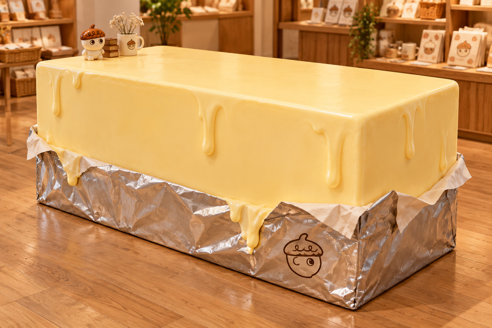

네모 상자를 넘어,
버터처럼 보이는 조형 매대
평평하고 튼튼한 상품 진열면에, 흘러 굳은 버터와 접힌 은색 포장지를 실제 입체로 더하는 네 가지 제작안.
완성품에서 지킬 형태

- 위와 아래 외곽이 같은 직사각 실루엣을 유지하되 모서리는 부드럽게 정리.
- 흘러내리다 굳은 버터의 두께와 끝 모양을 실제 조각으로 구현.
- 하단은 접혀 올라온 은색 버터 포장지의 볼륨과 주름을 입체로 표현.
- 상품이 놓이는 상판은 평평하게, 상품 하중은 별도 목재/철재 구조가 지지.
- 기존 카운터는 유지. 새 버터 조형은 중앙·벽면 진열집기를 대상으로 비교.
브랜드 외피를 분리해 회수할 수 있도록 만들면 기존 집기를 다시 활용할 수 있습니다. 단순 노란 도장·흐름 그림만 있는 네모상자와 실제 조형 견적을 구분합니다. EPS 발포재만으로 상품 하중을 받게 하지 않습니다.
견적을 맞추기 위한 가정 치수
중앙1대: 1,200×700×750mm / 벽면2대: 각1,000×350×750mm. 실내, 낮은 광택의 버터색, 하단 약1/4 포장지 표현을 가정했습니다. 실제 매장·출입문 실측과 수량 결정 전 값입니다. 포장지 가장자리는 날카로운 은박을 노출하지 않고 둥근 조형 바탕+은색 도장/적합한 필름으로 비교합니다.
제작 방법별 비교
| 제작안 | 표현·운영성 | 중앙1대 제작비 VAT 별도 | 중앙1+벽면2대 기본 부대비·VAT 포함 |
|---|---|---|---|
| A 기존 매대 + 탈착 조형 외피 | 튼튼한 기존 매대의 상판·골조를 살리고, 버터 흐름과 포장지 조형 측판을 뒤/아래에서 분리하는 방식. 철수 시 외피 회수. | 105~195만원 | 280.5~511.5만원 |
| B 새 목재 구조 + 조각/도장 | 새 목재 구조에 버터 흐름을 CNC/수작업으로 조각해 붙이고 이음새를 정리. 평평한 진열면에 유리하나 무게·분할 확인. | 130~220만원 | 341~572만원 |
| C 골조 + EPS 전체 조각 + 표면 보강 | 목재/철재 골조가 하중을 받고 EPS로 곡면·포장지 주름을 조각. 하드코팅과 접촉부 보강, 실물 샘플 확인. | 180~315만원 | 434.5~742.5만원 |
| D 원형·몰드 + FRP 외피 + 골조 | 원형·몰드를 만들어 FRP 외피를 성형하고 내부 골조에 결합. 반복 제작에 유리하지만 소량 초기비 부담. | 305~510만원 | 654.5~1,078만원 |
네 안은 대안 관계입니다. 모두 합산하지 않습니다. 중앙 제작비 열에는 공통 시안·샘플·운송·VAT가 빠져 있고, 오른쪽 3대 합계에는 포함되어 있습니다.
가장 작게 시작하는 선택지
A안 중앙1대만 먼저 제작하면 시안·기본 운송·VAT 포함 159.5~302.5만원 추정입니다. 벽면 버터 매대까지 완성되는 금액은 아닙니다. A안 중앙1+벽면2대의 중간 계획값은 396만원입니다.
A는 규격·강도가 맞는 기존 매대를 보유했다는 가정입니다. 새 기본 테이블 구입이 필요하면 그 비용을 추가합니다. 빠른 개장이 필요하면 중앙1대 샘플 승인 후 벽면 제작을 확대하거나, 반입 전 기존 집기로 판매를 시작할 수 있는지 논의합니다.
포함·제외와 납기
같은 조건으로 견적 비교하기
아래는 공정별로 배분한 작성자 예산입니다. 업체별 실제 단가가 아닙니다. 계산은 (중앙1대 + 벽면 단가×수량 + 공통 시안·샘플 + 1회 운송·설치)×1.1입니다.
A 기존 매대 + 탈착 조형 외피
| 공정 / 공급가액 | 낮음 · 만원 | 높음 · 만원 |
|---|---|---|
| 기존 구조 점검·보강 | 15 | 25 |
| 탈착 측판·버터 흐름 조각 | 45 | 85 |
| 표면 정리·도장 | 25 | 45 |
| 은색 포장지 조형 외피 | 20 | 40 |
| 중앙1대 제작 소계 | 105 | 195 |
| 벽면1대 제작비 · 수량만큼 추가 | 55 | 95 |
| 공통 시안·실물 샘플 · 1회 | 20 | 40 |
| 기본 운송·설치 · 1회 | 20 | 40 |
| 중앙1+벽면2대 + 공통비 + VAT10% | 280.5 | 511.5 |
B 새 목재 구조 + 조각/도장
| 공정 / 공급가액 | 낮음 · 만원 | 높음 · 만원 |
|---|---|---|
| 목재 구조·상판 제작 | 50 | 80 |
| CNC/수작업 버터 흐름 조각 | 30 | 55 |
| 이음새 정리·도장 | 30 | 50 |
| 은색 포장지 조형 외피 | 20 | 35 |
| 중앙1대 제작 소계 | 130 | 220 |
| 벽면1대 제작비 · 수량만큼 추가 | 65 | 105 |
| 공통 시안·실물 샘플 · 1회 | 25 | 45 |
| 기본 운송·설치 · 1회 | 25 | 45 |
| 중앙1+벽면2대 + 공통비 + VAT10% | 341 | 572 |
C 골조 + EPS 전체 조각 + 표면 보강
| 공정 / 공급가액 | 낮음 · 만원 | 높음 · 만원 |
|---|---|---|
| 하중용 골조·독립 상판 | 40 | 70 |
| CNC EPS 조각·정리 | 50 | 85 |
| 하드코팅·접촉부 보강 | 35 | 65 |
| 도장·상도 마감 | 30 | 50 |
| 은색 포장지 조형 외피 | 25 | 45 |
| 중앙1대 제작 소계 | 180 | 315 |
| 벽면1대 제작비 · 수량만큼 추가 | 80 | 130 |
| 공통 시안·실물 샘플 · 1회 | 30 | 50 |
| 기본 운송·설치 · 1회 | 25 | 50 |
| 중앙1+벽면2대 + 공통비 + VAT10% | 434.5 | 742.5 |
D 원형·몰드 + FRP 외피 + 골조
| 공정 / 공급가액 | 낮음 · 만원 | 높음 · 만원 |
|---|---|---|
| 중앙 원형·몰드 | 100 | 180 |
| FRP 외피 성형·정리 | 90 | 140 |
| 하중용 골조·독립 상판 | 45 | 75 |
| 도장·상도 마감 | 40 | 65 |
| 은색 포장지 조형 외피 | 30 | 50 |
| 중앙1대 제작 소계 | 305 | 510 |
| 벽면1대 제작비 · 수량만큼 추가 | 120 | 190 |
| 공통 시안·실물 샘플 · 1회 | 15 | 30 |
| 기본 운송·설치 · 1회 | 35 | 60 |
| 중앙1+벽면2대 + 공통비 + VAT10% | 654.5 | 1,078 |
버터다움과 내구성, 함께 검수
- 실측과 수량 — 출입문 폭·코너 회전·중앙 동선·벽면 길이 확인. 기존 매대 흔들림/처짐 점검.
- 같은 사양으로2곳 비교 — 골조·조각·코팅·도장·은색 외피·샘플·배송·설치·회수·VAT 구분.
- 작은 실물 샘플 승인 — 버터색·광택·흐름 두께·포장 주름을 매장 조명에서 확인. 도장 그림만인 견적은 별도 표시.
- 하중과 전도 — 진열상품 무게를 합산하고 제작사 허용하중·상판 처짐·전도 방지 구조를 서면 확인. 사람이 앉거나 서는 용도로 사용하지 않기.
- 접촉부 품질 — 모서리·흐름 끝·포장지 가장자리를 둥글게. 옷 걸림·박리·바닥 돌출·물 고임 확인.
- 소재와 표면 — 실제 코팅/외피의 난연·방염 관련 현장 요구조건·성적서, 충격과 마모 내구성 확인. 소재명만으로 성능을 보장하지 않기.
- 청소·열·보수 — 허용 세정제, 직사광선·난방기 사용조건, 충분한 경화, 동일색 보수재·AS 확인.
- 분해·회수 — 뒤/아래 공구 접근, 패널 번호, 분해순서, 포장재와 운반방식, 3개월 후 회수·보관비 확정.
제작사에 보낼 견적 요청
공법과 가격에서 실제 확인한 것
| 공급처·사례 | 확인 내용 | 이 가격의 한계 |
|---|---|---|
| 위브먼트 S1·S2 | EPS 조각→우레아코팅→도색. 서비스 표시100만원. | 크기·디자인별 별도 상담. 버터 매대 완성가100만원이 아님. |
| 하오팩토리 S3·S4 | CNC EPS·코팅·샌딩·도장, EPS+FRP 보강, 철재골조+패널, 분리조립 사례. | 현재 매대의 가격·납기·하중을 보증하지 않음. |
| 잭슨카멜레온 Bolla S5 | MDF 골조+FRP 적층 실제 가구. 우레탄 도장 표면은 부드러운 천으로 관리, 연마성 도구/매직블럭 피하기 안내. | 그 제품의 성능을 다른 주문제작 매대에 그대로 적용할 수 없음. |
| 도담마네킹 S6 | 기성 FRP 사각 전시대 기본 표시6만원, VAT별도, 배송 표시1.1만원/착불 안내. 크기·색상 옵션. | 저가 기성 전시대와 버터 조형 매대는 사양이 다름. 핀홀·표면 요철 가능성 안내. |
| 피카소가구 S7 | 30각 테이블 기본 표시6.2만원, 규격 선택. | 기본 골조 후보만. 옵션 최종가·착불배송·조립 확인. 버터 외피 미포함. |
| 마롱컴퍼니 S8 | 원형→FRP 성형→도색·코팅 및 EPS 직접 코팅 방식 구분. | 몰드 방식과 EPS 직접 조각을 같은 공정/가격으로 묶지 않음. |
- S1 · 위브먼트 EPS 제작 공정확인 2026-10-04 · 제작사/판매자 공개 안내
- S2 · 위브먼트 판매자 공개 서비스 가격확인 2026-10-04 · 제작사/판매자 공개 안내
- S3 · 하오팩토리 EPS 제작 흐름확인 2026-10-04 · 제작사/판매자 공개 안내
- S4 · 하오팩토리 복합 소재 제작확인 2026-10-04 · 제작사/판매자 공개 안내
- S5 · 잭슨카멜레온 Bolla 소재·구조·관리 안내확인 2026-10-04 · 제작사/판매자 공개 안내
- S6 · 도담마네킹 FRP 사각 전시대확인 2026-10-04 · 제작사/판매자 공개 안내
- S7 · 피카소가구 30각 테이블확인 2026-10-04 · 제작사/판매자 공개 안내
- S8 · 마롱컴퍼니 원형·FRP 제작 사례확인 2026-10-04 · 제작사/판매자 공개 안내